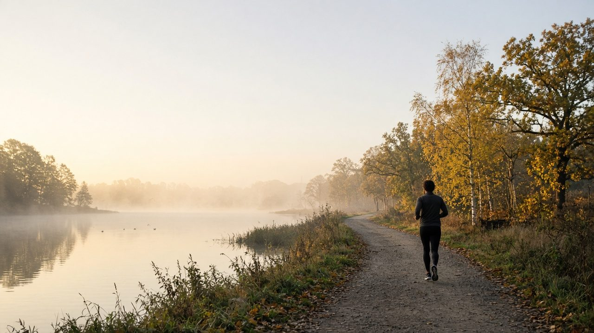

Spring Stockholm. Rätt runda, varje gång.
Handplockade löprundor mellan vatten, parker och stad – med distans, underlag och var du kan fylla på vatten. Gratis.
Börja med de här tre.
Alla går att nå med SL och fungerar året runt.

Djurgården runt
Stockholms klassiker. Följ Djurgårdsbrunnsviken österut på mjukt grus, korsa vid Djurgårdsbrunnskanalen och vä…

Brunnsviken runt via Hagaparken
En längre runda genom två av Stockholms vackraste parker. Från Frescati längs vattnet till Hagaparken – förbi …

Kungsholmen runt – Riddarfjärden
Stockholm från vattnet. Norr Mälarstrand med utsikt mot Riddarfjärden och Södermalm, vidare genom Rålambshovsp…
Alla rundor som PDF – plus en 4-veckorsplan.
Karta, vägbeskrivning steg för steg och tips för varje runda. Skriv in din e-post så skickar vi paketet direkt.

Gjort av en löpare på Östermalm.
Min egen vardagsrunda går från Östermalm ut till Djurgårdsbrunnsvägen och tillbaka – ca 5,8 km. Löpstockholm samlar rundorna jag själv tycker om, och är samtidigt mitt portfolioprojekt inom digital marknadsföring.
- Rundor testade på riktigt
- Avstånd avrundade och tydligt märkta som ungefärliga
- Ingen spårning utan ditt samtycke